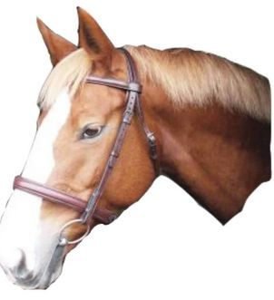
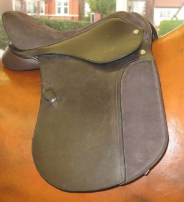
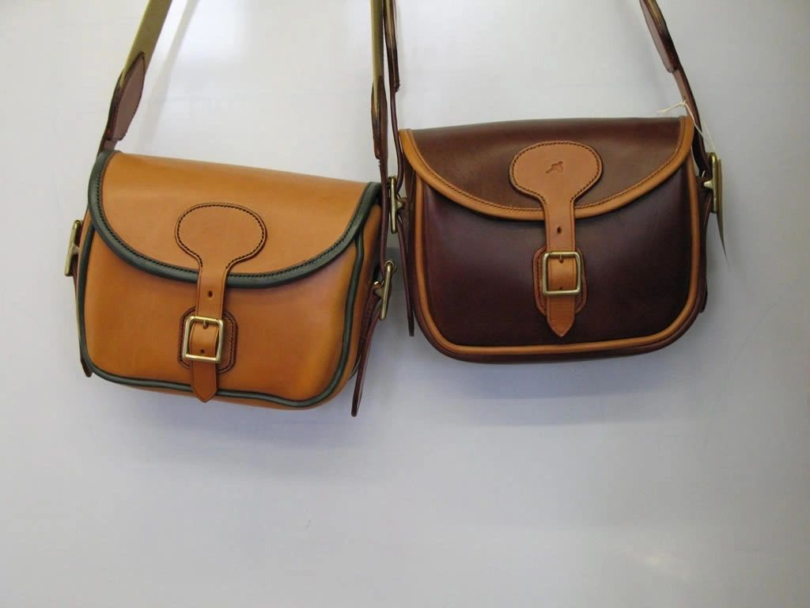
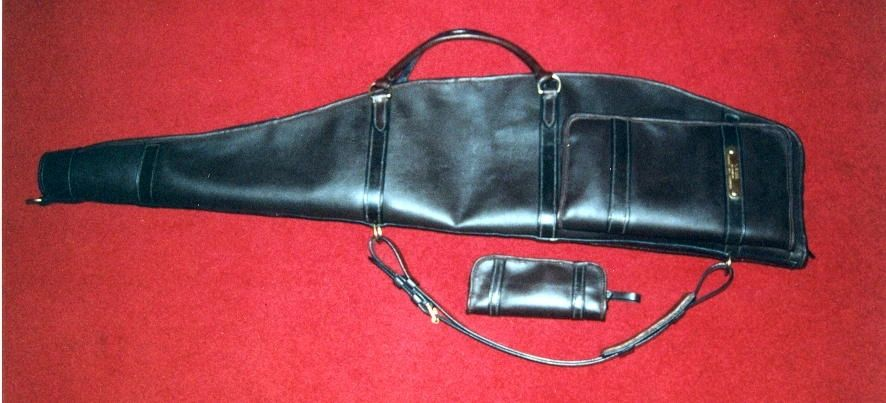
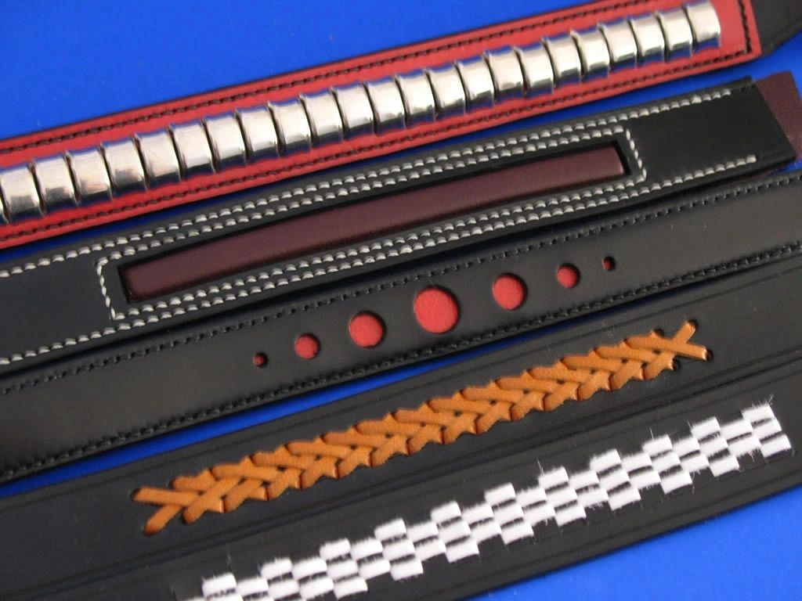
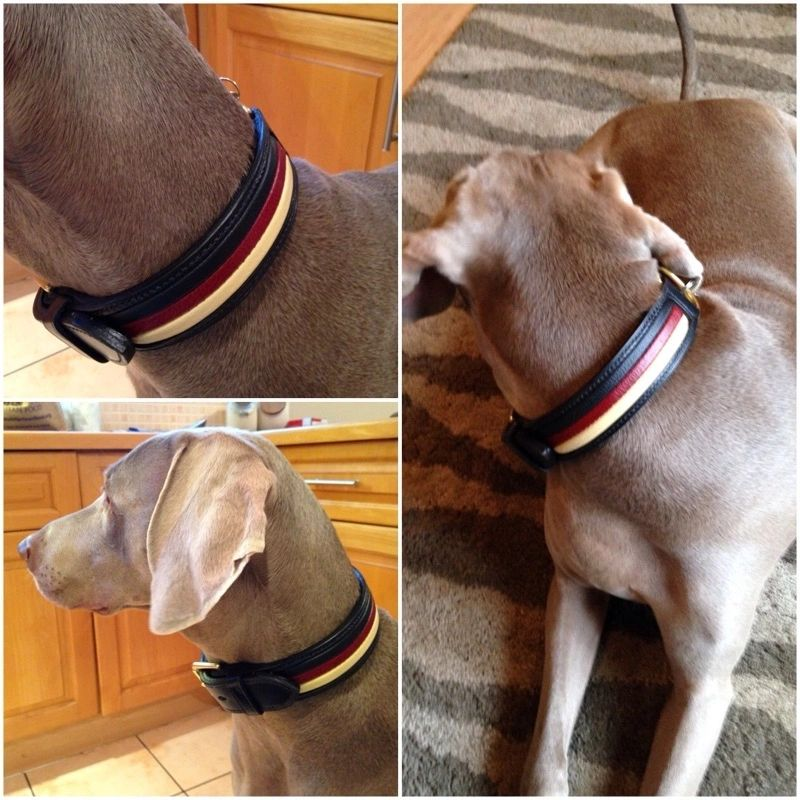

Bridles & headcollars
Riding, driving (trade or presentation), in-hand bridles, stock halters and headcollars, made to any style and size.
Bespoke saddlery and leatherwork made to measure, plus hands-on courses taught by Master Saddlers.
Made to any style and size to suit requirements, with Master Harness Makers on site and a free measuring service.

Riding, driving (trade or presentation), in-hand bridles, stock halters and headcollars, made to any style and size.

Custom-measured saddles plus GFS (Fieldhouse Riding) saddles with interchangeable head plates, fitted on site.

Full presentation or trade harness sets, individual harness components, reins, girths, breast-girths and breastplates.

Made to order in tan or dark leather, with brass buckle fastenings.

Full-length leather rifle cases with a matching accessory pouch.

Traditional stitched leather slips built to protect and carry.

Made to measure in a choice of leathers, stitch colours and hardware.

Full-grain leather satchels built to last, finished with brass hardware.

Custom colourways and stitching, made to your dog's measurements.
Taught on site by Chris Taylor and Louise. A £50 deposit by bank transfer reserves your place on any course.
| Course | Length | What's covered | Price |
|---|---|---|---|
| Introduction to Leatherwork | 2 days | A short exploration of foundational techniques, no final project — good for those unsure whether to pursue the craft further. | £255pp |
| Basic Leatherwork | 5 days | Hand stitching using traditional methods, tool maintenance, leather and hardware selection. Finishes with a complete project, typically a cavason bridle. | £475pp |
| Intermediate Leatherwork | 5 days | For students with prior experience: pattern creation, specialised reins, decorative browbands and custom bridle measurements. | £490pp |
| Saddle Flocking & Adjustment — Part 1 | City & Guilds | Saddle construction and tree types, panel replacement and re-flocking, following the Society of Master Saddlers curriculum. Bring your own saddle for practical work. | £520pp |
| Saddle Flocking & Adjustment — Part 2 | 2 days | Revision and formal certification assessment. Requires Part 1 plus a minimum 6-week practice period beforehand. | £130pp |
Feedback is collected anonymously by design, to keep it honest — so quotes below aren't attributed to a name.
“Really pleased with the whole process and how much we got to learn.” Course evaluation form
“I can't quite believe how much I have developed skills in a short space of time.” Course evaluation form
“Had the best week ever!! Thoroughly enjoyed it.” Course evaluation form
Contact the workshop with details of the item and, if relevant, sizes — or use the bridle measuring form for a made-to-measure bridle.
Because every piece is handmade, we'll confirm price and an estimated timeframe once we know what's needed.
Your piece is made by hand in the Southport workshop by our Master Saddlers.
Postage is confirmed once the item is made and packed, then sent via Post Office or courier. Free adjustments apply to professionally measured bridles.